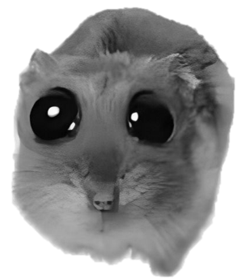

Пример соподчинения
На примере конкретного организма видно, как уровни систематики выстраиваются сверху вниз: от империи до вида.

Империя: Клеточные
Надцарство: Эукариоты
Царство: Животные
Тип: Хордовые → Позвоночные
Класс: Млекопитающие (кормит детёнышей молоком, имеет шерсть)
Отряд: Грызуны (имеет постоянно растущие резцы)
Семейство: Хомяковые (Cricetidae) — защёчные мешки
Род: Cricetus (Настоящие хомяки)
Вид: Cricetus cricetus (Хомяк обыкновенный)